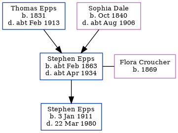

Stephen Epps cFeb 1863 - c1934
[ Home ] | [ Calendar ] | [ Surnames Index ] | [ Family History ]A tractor engine driver and the child of Thomas Epps (a laborer on a farm) and Sophia Dale, Stephen Epps, the first cousin three-times-removed on the father's side of Nigel Horne, was born in Chartham, Kent, England c. Feb 18631,2 and married Flora Croucher (with whom he had 1 child, Stephen Thomas) in Bridge, Kent, England around Nov 19004.
Stephen spent all of his life in Kent, England. Throughout his life, he lived in several places around the county: at Dog Kennel House in Chartham on Apr 2, 18716; at Milton Cottage in Chartham on Apr 5, 18917; at Marlowe Terrace, Thanington on Mar 31, 19018 (when he was living with his parents) and on Apr 2, 19119 (the same place as his parents had been living on Mar 31, 1901); and at Wincheap Street, Canterbury on Jun 19, 19211. Stephen In 1921 he was working at Mr Allan Engineer & Contractor.
He died c. Apr 1934 in Canterbury, Kent3 and was buried at St Nicholas, Thanington, Kent on Apr 19, 19345.
Parents
- Thomas was born in 1831
- Sophia was born in Oct 1840
Children
- Stephen Thomas was born on Jan 3, 1911
Citations
- 1921 Census Of England & Wales - Findmypast (was age 57 and the head of the household)
- England & Wales births 1837-2006 - Findmypast
- England & Wales deaths 1837-2007 - Findmypast
- England & Wales Marriages 1837-2005 - Findmypast
- Kent, Canterbury Archdeaconry Burials - Findmypast
- 1871 England, Wales & Scotland Census - Findmypast (was age 8 and the son of the head of the household)
- 1891 England, Wales & Scotland Census - Findmypast (was age 28 and the son of the head of the household)
- 1901 England, Wales & Scotland Census - Findmypast (was age 39 and the head of the household)
- 1911 Census for England & Wales - Findmypast (was age 48 and the head of the household)
Media
1891 England, Wales & Scotland Census - GBC/1891/0005719334
England & Wales births 1837-2006 - BMD/B/1863/1/AZ/000378/057
England & Wales deaths 1837-2007 - BMD/D/1934/2/AZ/000273/027
Kent, Canterbury Archdeaconry burials - GBPRS/CANT/D/95508413
1871 England, Wales & Scotland Census - GBC/1871/0014163378
England & Wales marriages 1837-2005 - BMD/M/1900/4/AZ/000120/213
1911 Census for England & Wales - GBC/1911/RG14/04321/0309/1
1901 England, Wales & Scotland Census - GBC/1901/0005466924
1921 Census of England & Wales - GBC/1921/RG15/04323/0109/01
Family Tree
Generated by Ged2Site. Last updated on Jul 20, 2025